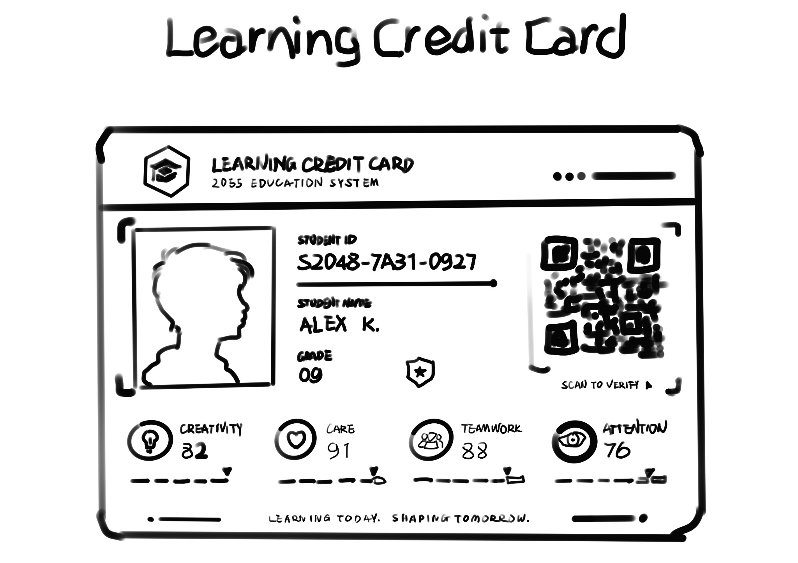
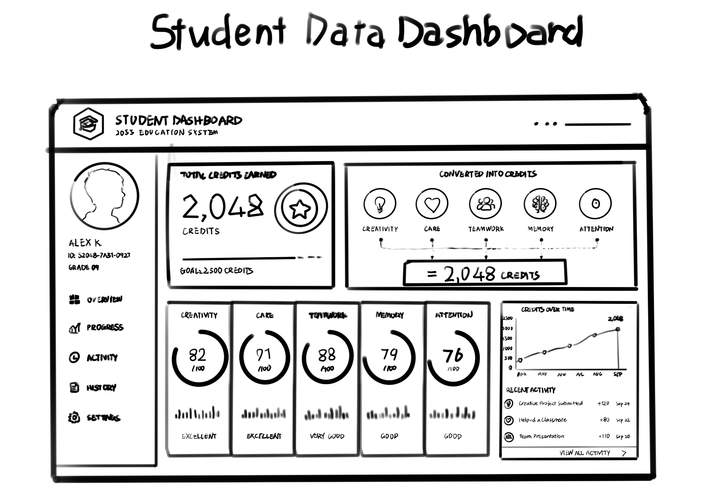
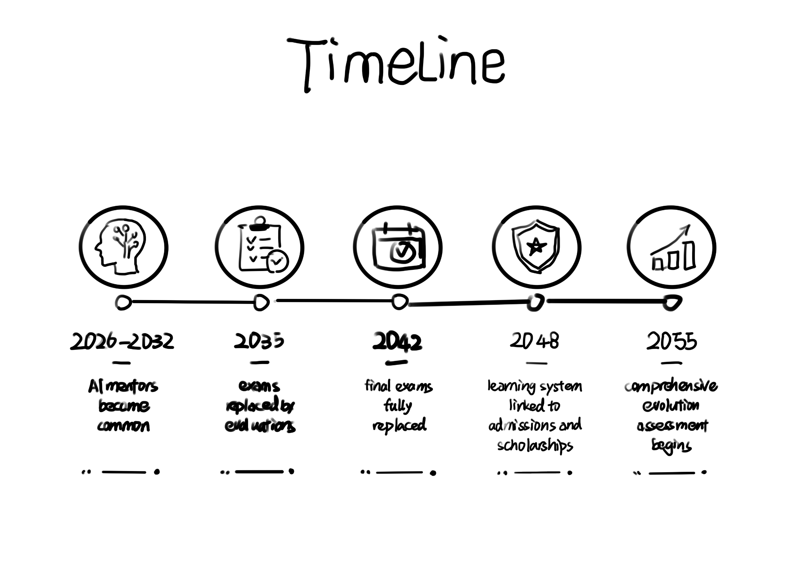
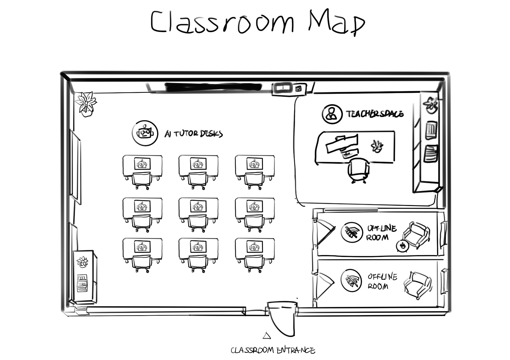
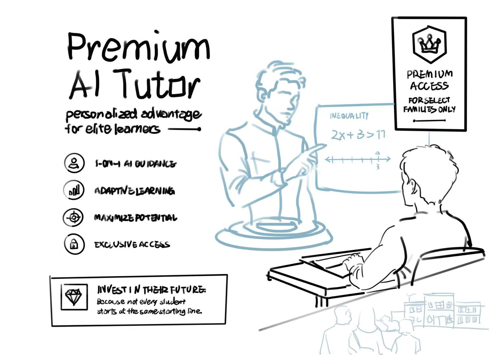
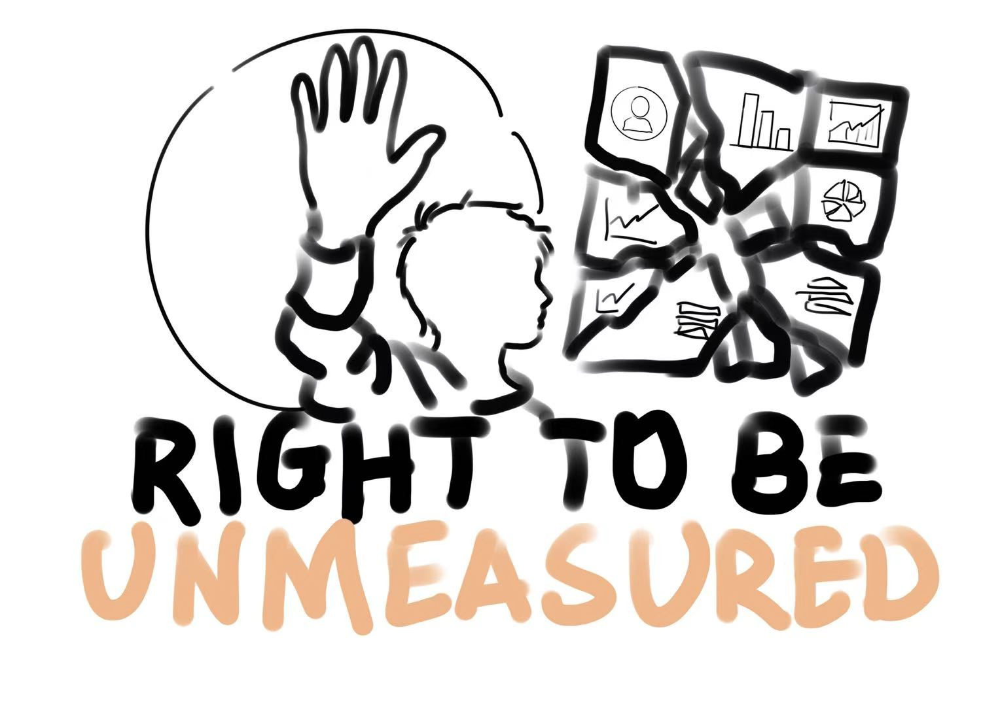

A planet that is close to our current civilization but more futuristic: Traditional college entrance exams and tests no longer exist. At the same time, the education system has transformed into a data system that runs throughout one's entire life, consisting of learning credits, AI tutors, and an entire database.
In the year 2055, traditional exams such as the college entrance examination no longer exist. The evaluation criteria for students' learning at school are no longer based on traditional grades. Instead, all students now have a lifelong learning system that encompasses various aspects such as creativity, care work, teamwork, and language usage. This lifelong learning system not only records students' grades but also pays more attention to their creativity, care work, teamwork, and language skills. This system claims to better identify students' potential and is fairer than exams because it recognizes the achievements of students in different forms. However, on the other hand, this system also turns every student's childhood into a data archive that can be continuously recorded. So this world is neither a utopia nor an anti-utopia: in this world, there are two aspects. Some students may feel liberated from the pressure of exams, while others may feel that their habits have been constantly recorded, and they find this annoying.
In this world, educational platforms, AI tutors, learning analytics systems, and online classrooms, among other data archives, are constantly collecting students' habits and data. The problem is no longer that technology enters the classroom, but rather that the essence of learning has fundamentally changed. Learning has become something that is constantly recorded and predicted.
At the same time, will everyone really become equal under this system? Will wealthy families be able to purchase better teachers, better courses, or more powerful learning systems? Therefore, in this future world, the biggest question is whether data-driven education will truly make students equal.
"The learning system" is the most fundamental and crucial system in this world. Each student has a lifelong account, and the system will collect data for different students to provide the most suitable learning methods for them, as well as collect their various learning values such as creativity, language ability, cooperation ability, memory, and attention.


This image shows how different types of student behaviour can be turned into visible numbers. Creativity, care, teamwork, memory and attention are converted into learning credits inside the system.
2026-2032: During this period, it is necessary to make AI mentors ubiquitous in schools and universities. Schools should also offer personalized learning plans.
2035: At this stage, it will be necessary to replace large-scale examinations with evaluations.
2042: In the entire world, the final exam system was completely replaced by an alternative system.
2048: The learning system begins to be linked with university admissions, scholarships, and early career paths.
2055: The system initiates a comprehensive evolution assessment to evaluate the overall potential of students.


Image 4: A classroom map showing AI tutor desks, human teacher space and offline rooms.
In the year 2055, the students' future lives have been completely different from before. Students no longer take traditional exams. However, the daily study situation will be recorded by the learning system. Every time a student enters the classroom, their ID card will automatically connect to the screen, and this will directly record all aspects of the student's situation.
Every morning, students will first take a health test to allow the system to understand their mental state. Then, they will study together with the AI tutor. The teacher still exists, but the teacher will only sit on the podium. When students don't understand something, the teacher will explain it instead of lecturing all the time.
Students will participate in various outdoor activities or community services. In the future, these activities will have an impact on their grades. Some students think it's fairer because abilities beyond exams are also taken into account. However, on the other hand, there are definitely some students who feel under a lot of pressure because their behaviors are constantly being evaluated and recorded.
This learning system has its advantages, and of course, it also has its risks. This system is more open than traditional exams. Because this system assesses creativity, language skills, teamwork ability, responsibility for taking care of family members, and community service, all of which can be recorded. As a result, students who are not good at learning from textbooks will be more likely to be noticed.
However, this system will also bring about new inequalities. Wealthy families will definitely receive better AI teachers and learning equipment. Their children will achieve higher scores under this system. On the contrary, students from ordinary families, although also recorded by the system, will not have the same resources and thus will not obtain such high scores.


Image 6: A protest poster for the Right to Be Unmeasured.
This future world has some similarities with current education. Most schools nowadays have online learning platforms. These technologies can assist students in their studies and also help teachers understand the students' situations.
However, if everything is systematically recorded for grading purposes, the pressure on education might increase. Students' fundamental purpose might change, not being there to learn for the sake of learning. Students might merely pretend to be students in order to receive higher grades. Grades, emotions, attention, and behavior might all be analyzed by the system.